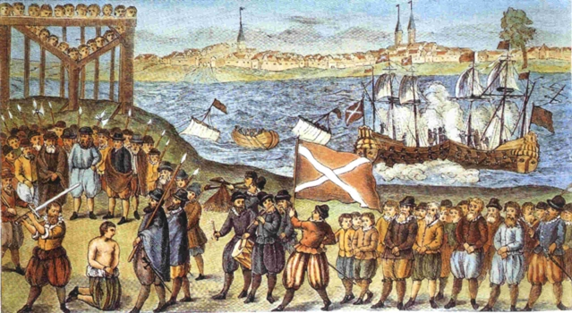

การสำรวจทะเลในปัจจุบัน มุ่งเน้นไปที่การใช้เทคโนโลยีทันสมัยเพื่อศึกษาสิ่งมีชีวิตใต้ทะเล, ระบบนิเวศทางทะเล, ทรัพยากรธรรมชาติ, และการเปลี่ยนแปลงสภาพภูมิอากาศ การสำรวจทะเลในยุคนี้มีความหลากหลายและครอบคลุมหลายด้าน ทั้งทางวิทยาศาสตร์, เศรษฐกิจ, และการอนุรักษ์ทะเล
